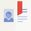
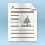
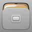

Launchpad
Dieser Artikel bezieht sich auf Ubuntu Touch, die Variante von Ubuntu für mobile Geräte mit Touchscreen.
Dieser Artikel gilt für alle Versionen von Ubuntu Touch.
Zum Verständnis dieses Artikels sind folgende Seiten hilfreich:
 Das Projekt Ubuntu Avengers entstand ursprünglich im offiziellen Wiki
Das Projekt Ubuntu Avengers entstand ursprünglich im offiziellen Wiki 
 , um dem Entwicklerteam Rückmeldungen zu liefern. Auch die neuesten kommenden Funktionen und Lösungen kann man dort nachsehen. Die folgende Linkliste des Artikels ist hilfreich, um Fehlerberichte, welche in Ubuntu Touch vorkommen, gezielt via Launchpad zu melden[1]. Dafür ist ein Zugang erforderlich, wobei dafür der Login des Ubuntu Store verwendet werden kann. Fehlerberichte lassen sich unter "Systemeinstellungen -> Sicherheit & Datenschutz -> Fehlerdiagnose" aktivieren, deaktivieren sowie einsehen.
, um dem Entwicklerteam Rückmeldungen zu liefern. Auch die neuesten kommenden Funktionen und Lösungen kann man dort nachsehen. Die folgende Linkliste des Artikels ist hilfreich, um Fehlerberichte, welche in Ubuntu Touch vorkommen, gezielt via Launchpad zu melden[1]. Dafür ist ein Zugang erforderlich, wobei dafür der Login des Ubuntu Store verwendet werden kann. Fehlerberichte lassen sich unter "Systemeinstellungen -> Sicherheit & Datenschutz -> Fehlerdiagnose" aktivieren, deaktivieren sowie einsehen.
Hinweis:
Fehler, die niemand gemeldet hat und man selbst auch nicht meldet, können und werden eher nicht behoben werden. Ubuntu Touch ist ein sehr junges Projekt, welches sich noch stark in Weiterentwicklung befindet. Umso wichtiger ist es, seinen Ubuntu Store Zugang für wenigstens kurze, recht formlose Meldungen zu nutzen und für Rückfragen zur Verfügung zu stehen. Einzige Voraussetzung ist, dass man zumindest ansatzweise verständlich der englischen Sprache mächtig ist.
Bei Problemen kann man auf der Launchpad-Seite als Anwender nach eventuell bereits bestehenden Lösungen oder Problem-Meldungen suchen , Lösungsvorschläge oder als Entwickler sogar einen Patch einreichen . Des Weiteren kann auf der Seite canonical-devices-system-image/+milestones stets der aktuelle Entwicklungsstand der Rolling-Release-Version Ubuntu Touch beobachtet werden:
Oben wählt man eins der nächsten OTA-Aktualisierungen aus, um zu sehen, welche Funktionen sowie Problemlösungen dafür geplant sind und welche Funktionen bereits beendet wurden ("Fix Committed" ) und in diesem oder spätestens nächsten OTA ausgeliefert werden sowie an welchen gerade gearbeitet wird ("In Progress" ). Übriggebliebene Bugs werden verschoben, meist auf das nächste OTA.
Die folgenden Tabellen sind nicht vollständig und können ergänzt bzw. erweitert werden. Unter Translatable applications findet man eine Liste von Programmen, die übersetzt werden können. Wenn man trotz der folgenden Übersichten nicht weiß, wo genau man seinen Bericht melden sollte, kann er notfalls auch von Projektbeteiligten in den richtigen Bereich verschoben werden.
Anwendungen¶
| Anwendungen | ||||
| Logo | Anwendung | Fehler melden | Fehlerliste | Ubuntu Store |
| Authenticator | Formular | Bugs | Authenticator | |
| Browser | Formular | Bugs | Browser | |
| Calculator | Formular | Bugs | Calculator | |
| Calendar | Formular | Bugs | Calendar | |
| Camera | Formular | Bugs | Camera | |
| Clock | Formular | Bugs | Clock | |
|  | Contacts | Formular | Bugs | Contacts |
| Dekko | Formular | Bugs | Dekko | |
| Dialer | Formular | Bugs | Dialer | |
|  | Document Viewer | Formular | Bugs | Document Viewer |
 | Dropping Letters | Formular | Bugs | Dropping Letters |
|  | File Manager | Formular | Bugs | File Manager |
| Gallery | Formular | Bugs | Gallery | |
| Media Player | Formular | Bugs | Media Player | |
| Messaging | Formular | Bugs | Messaging | |
| Music | Formular | Bugs | Music | |
| Notes | Formular | Bugs | Notes | |
| Shorts | Formular | Bugs | Shorts | |
| Sudoku | Formular | Bugs | Sudoku | |
| System Settings | Formular | Bugs | System Settings | |
| Tagger | Formular | Bugs | Tagger | |
| Telegram | Formular | Bugs | Telegram | |
| Terminal | Formular | Bugs | Terminal | |
| uNav | Formular | Bugs | uNav | |
| Weather | Formular | Bugs | Weather | |
 | Webapps | Formular | Bugs | Webapps |
Anzeigen¶
| Anzeigen | ||
| Anzeige | Fehler melden | Fehlerliste |
| Akku | Formular | Bugs |
| Benachrichtigungen | Formular | Bugs |
| Bluetooth | Formular | Bugs |
| Dateien | Formular | Bugs |
| Klang | Formular | Bugs |
| Netzwerk | Formular | Bugs |
| Rotation | ||
| Standort | Formular | Bugs |
| Zeit und Datum | Formular | Bugs |
Grundsystem¶
| Grundsystem | ||
| Bereich | Fehler melden | Fehlerliste |
| Canonical System Image | Formular | Bugs |
| Click Scope | Formular | Bugs |
| Download Manager | Formular | Bugs |
| Grundsystem | Formular | Bugs |
| Image-based updates | Formular | Bugs |
| Keyboard | Formular | Bugs |
| Location Service | Formular | Bugs |
| Media Hub | Formular | Bugs |
| Mir | Formular | Bugs |
| Music Scope | Formular | Bugs |
| Nearby Scope | ||
| Ofono | Formular | Bugs |
| Storage | Formular | Bugs |
| Today Scope | Formular | Bugs |
| Ubuntu UI Toolkit | Formular | Bugs |
| Unity | Formular | Bugs |
Problembehebung¶
Hier werden einige momentan populäre bzw. wichtige Probleme und Lösungen aus Launchpad sowie dem Forum aus der Masse an Meldungen hervorgehoben, die hauptsächlich schon länger und nicht nur kurzzeitig neu bestehen. Die Diskussion findet auf diesen beiden Plattformen statt.
Besondere Themen:
Was tun, wenn eine App nicht mehr funktioniert - Am Beispiel von: "Musik App funktioniert seit OTA 9 nicht mehr auf Meizu Mx4".
wie ausgereift ist ubuntu touch, wo liegen seine Grenzen - Diskussionsthema über den aktuellen Reifegrad von Ubuntu Touch.
Was vermisst ihr noch unter Ubuntu Touch? - Diskussionsthema. Z.B. wird von manchen Benutzern CardDAV sowie CalDAV integriert (ohne Terminal) gewünscht.
ubuntu phone + whatsapp? - unfreies Format, Programm kann daher nur der Hersteller selbst bereitstellen.
OpenVPN mit Ubuntu Touch nutzbar? - Lösung in Arbeit, kommt voraussichtlich mit OTA-10.
ubuntu-application-lifecycle
: Apps müssen oft im Vordergrund und Bildschirm an sein, um nicht in Standby (Bereitschaft) zu gehen.Tippen im Querformat in der Email App Dekko: Man muss kurz ⌫ oder ⏎ drücken, um die Zeile zu sehen, in der man gerade etwas tippt.
Dekko: No notifications for new mails - keine automatische Benachrichtigung für eingehende Mails.
Gallerie viel zu langsam: gallery performs slower than similar apps on other platforms.
Implement a touch editing UI - neu überarbeitete Kopieren-Funktion z.B. im Browser außerhalb Editierfenster oder Adresszeile im normalen Text derzeit nicht mehr möglich, Fix in OTA-10.
No encryption for system and data - noch keine Verschlüsselung des Homeverzeichnisses.
Crypto Messenger für Ubuntu Touch? - noch kein (verschlüsselbarer) Messenger wie ein Jabberclient außer Telegram. Wird sich erst in der ersten Jahreshälfte 2016 mit Hilfe von Libertine ändern.
Bereits kürzlich behobene Probleme und neu geschaffene Funktionen befinden sich meist zeitnah im Plauderthread über Ubuntu Touch  sowie direkt unter ReleaseNotes übersichtlich gelistet zusammengefasst. Bei canonical-devices-system-image/+milestones werden auch die nächsten Aktualisierungspläne und deren Fortschritt gelistet.
sowie direkt unter ReleaseNotes übersichtlich gelistet zusammengefasst. Bei canonical-devices-system-image/+milestones werden auch die nächsten Aktualisierungspläne und deren Fortschritt gelistet.
Links¶
Ubuntu Touch
 Übersichtsartikel
ÜbersichtsartikelDatensicherung - bevor man irgendetwas repariert oder konfiguriert...
Ubuntu Touch/Notfall - Einstellungen zurücksetzen sowie Logdateien einsehen
Terminal - System mit dem Terminal beeinflussen
Forum (Mailingliste)
von Ubuntu Touch
- Erstellt mit Inyoka
-
 2004 – 2017 ubuntuusers.de • Einige Rechte vorbehalten
2004 – 2017 ubuntuusers.de • Einige Rechte vorbehalten
Lizenz • Kontakt • Datenschutz • Impressum • Serverstatus -
Serverhousing gespendet von